Detect, Triage, Enrich
Session 3 you learned to read the telemetry. Today you build the machine that reads it for you: write detection rules (Wazuh + Sigma), work the alerts they fire, and enrich the indicators until you can say "true threat" or "noise" with confidence.
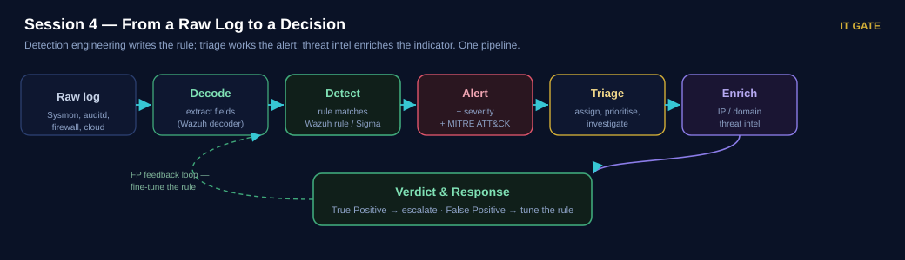
Today's agenda
| Block | Topic | Time |
|---|---|---|
| 1 | Recap Session 3 | 10 min |
| 2 | Detection engineering · Wazuh decoders, rules, custom rules | 55 min |
| 3 | Lab — write a custom Wazuh rule | 30 min |
| — | Break | 15 min |
| 4 | Sigma — portable detection rules & conversion + guided lab | 55 min |
| 5 | Alert triage · IP & domain threat intel | 45 min |
| 6 | Investigation challenge · knowledge check · homework | 30 min |
Your Session 2–3 lab must be flowing — index=sysmon and index=linux_audit
returning events. Today's Wazuh work uses the same Sysmon/auditd telemetry you already produce.
They're one job seen from three seats: the detection engineer writes the rule, the L1 analyst triages the alert, and the threat-intel lookup decides the verdict. You'll do all three today on the same attack.
What You Will Be Able To Do
Turn a raw log into a decision — the full loop.
- Explain how Wazuh decoders extract fields and rules test them to raise an alert.
- Write a custom Wazuh rule (correct ID range,
if_sidparent, level, MITRE) and test it. - Write a Sigma rule and convert it to Splunk / Elastic / Wazuh queries.
- Triage an alert as an L1 — prioritise, take ownership, investigate, give a verdict.
- Enrich an IP or domain with open-source threat intel and decide malicious vs benign.
Module 3 · 3.5 (detection rules & alerts) · 3.7 (triage workflow, TP/FP/TN/FN) · 3.8 (IOCs & enrichment)
A detection is only as good as its triage, and a triage is only as good as its enrichment. A rule that fires but is never worked is just noise; an alert closed without enrichment is a guess.
Quick Recap — Session 3
Answer before you reveal. If your Sysmon/auditd isn't flowing, flag it now.
Q1 Which Sysmon Event ID gives the parent, command line and hash a rule can match on?
- EID 3 (network)
- EID 13 (registry)
- EID 1 (process create)
- EID 22 (DNS)
Q2 Which field links a 4624 logon to the account changes that session made?
- Event ID
- Logon ID
- Source Port
- Task Category
Q3 What is the goal of the 5-minute "first response" on an alert?
- Complete a full forensic disk image
- Rewrite the detection rule
- Reinstall the affected host
- Validate, scope and decide if it's real
Q4 What is the classic analyst blind spot Session 3 warned about?
- Looking only at the Security log
- Enabling Sysmon
- Forwarding logs to a SIEM
- Pivoting on a Logon ID
The Alert That Should Have Fired
Good telemetry is worthless if nothing is watching it.
A company deployed Sysmon on every endpoint. The logs flowed into the SIEM perfectly. Weeks later, an attacker installed a remote-access tool silently, created a hidden admin account, and set a Run-key for persistence. Every one of those actions was in the logs — and no one saw them, because no rule was written to raise an alert.
The fix is detection engineering: turning "this behaviour is bad" into a rule that fires an alert the moment it happens. Then a rule fires, an analyst picks it up, checks the indicators against threat intel, and stops the intrusion in minutes instead of weeks.
Collection is not detection. Today you write the rules (Wazuh, Sigma), then work the alerts they produce (triage) and enrich what they contain (threat intel) — the loop that catches the attack the logs already saw.
Detection Engineering — The Foundations
Writing the rules that turn expected telemetry into a small number of alerts worth a human's time.
A SOC receives millions of events a day. Detection engineering compresses that flood into dozens of alerts by encoding known-bad behaviour as rules. Good rules are specific enough to avoid drowning analysts in noise, yet broad enough not to miss the attack.
Types of detection rule
| Type | Fires when… | Example |
|---|---|---|
| Signature / pattern | a field matches a known-bad value | process name = mimikatz.exe |
| Threshold | an event count crosses a limit in a window | 20+ failed logons / 5 min |
| Correlation | several events occur in sequence | 4625 spike → 4624 → 4720 |
| Anomaly / behaviour | activity deviates from a baseline | user logs in from a new country |
Every alert gets a verdict
| Verdict | Meaning | Action |
|---|---|---|
| True Positive | rule fired, activity is really malicious | escalate / respond |
| False Positive | rule fired, activity is benign | tune the rule |
| True Negative | no alert, nothing bad happened | ideal state |
| False Negative | no alert, but an attack happened | the dangerous one — write a new rule |
Detection engineering is a loop, not a one-off: write rule → watch the alerts → too noisy? tighten it → missing attacks? loosen or add one. Every false positive you tune away buys back analyst time.
Module 3 · 3.5 — detection rules, alerts, rule types · TP / FP / TN / FN
Wazuh — Decoders Extract the Fields
A raw log is just text. A decoder pulls out the values a rule can test.
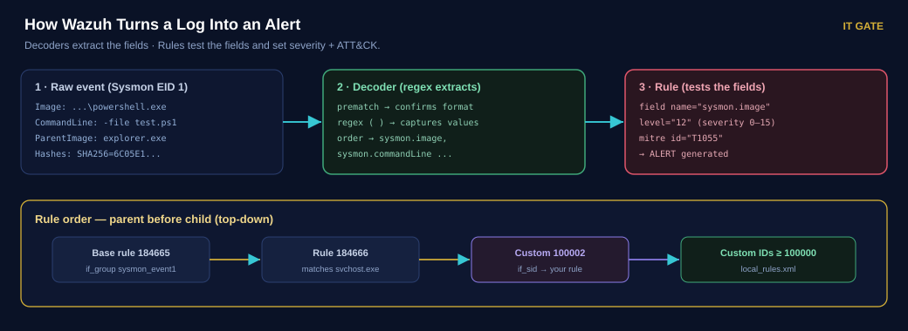
Wazuh ingests logs from many sources, each with a different shape. A decoder uses regular
expressions to carve out the useful values and name them (e.g. sysmon.image,
sysmon.commandLine). Rules then reference those named fields.
The parts of a decoder
| Element | Job |
|---|---|
name | identifies the decoder (several blocks can share a name = a group) |
parent | the decoder processed first; children run after it |
prematch | a quick regex that confirms "this log is mine" before doing more work |
regex | captures data — anything inside unescaped parentheses ( ) is extracted |
order | names the captured values in order (1st ( ) → 1st name, etc.) |
The Wazuh dashboard has a Ruleset Test tool. Paste a sample log and it shows three phases: Phase 1 pre-decoding (timestamp, host), Phase 2 decoding (the fields your decoder extracted), Phase 3 filtering (which rule fired). You'll live in this tool today.
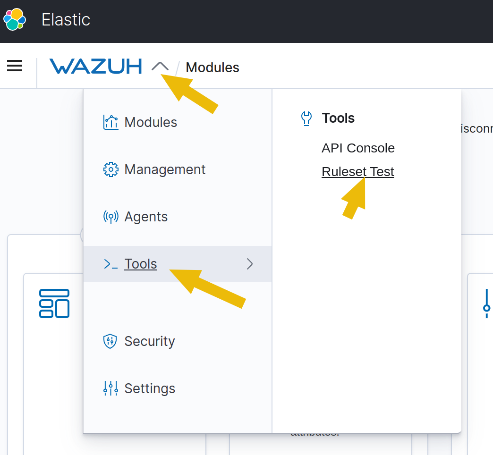
For well-known sources (Sysmon, auditd, most firewalls) Wazuh already ships decoders — you rarely write one from scratch. You write decoders mainly for an in-house app or an obscure appliance with a custom log format.
Wazuh — Rules Test the Fields
A rule reads the decoded fields, decides if they're suspicious, and stamps a severity + ATT&CK.
A rule is a small block that matches one or more decoded fields. When it matches, Wazuh generates an alert carrying the rule's level (0–15 severity), description, and any compliance/MITRE mappings.
<rule id="184666" level="12">
<if_group>sysmon_event1</if_group>
<field name="sysmon.image">svchost.exe</field>
<description>Sysmon - Suspicious Process - svchost.exe</description>
<mitre><id>T1055</id></mitre>
</rule>| Option | Meaning |
|---|---|
id | unique rule number |
level | severity 0–15 (0 = ignore / no alert, 12 = high) |
if_group | only evaluate when a named group already matched (a prerequisite) |
field name | the decoded field to test — its value is matched with regex |
mitre / group | ATT&CK technique & categories carried into the alert |
Wazuh evaluates rules top-down. A rule with if_group or if_sid only runs after its
parent matched. So a broad "this is a Sysmon EID 1" base rule fires first, then narrower child rules refine
it. Understanding this order is the key to writing custom rules that actually trigger.
Module 3 · 3.5 — rule structure, severity levels, mapping detections to MITRE ATT&CK
Wazuh — Custom Rules & Fine-Tuning
The built-in rules are broad. Your environment needs its own.
You write custom rules to cover your own risks, integrate a niche tool, catch a newly-learned attack, or fine-tune a noisy rule. Two hard conventions:
- Custom rules live in
/var/ossec/etc/rules/local_rules.xml. - Custom rule IDs start at 100000 and up (never reuse built-in IDs).
A child rule uses if_sid to sit under a parent, then adds one more condition. Example — alert
when a file is created in a tmp/downloads folder (parent = the built-in "file
created" rule):
<group name="audit,">
<rule id="100002" level="3">
<if_sid>80790</if_sid>
<field name="audit.directory.name">downloads|tmp|temp</field>
<description>Audit: $(audit.exe) created $(audit.file.name) in $(audit.directory.name)</description>
</rule>
</group>Fine-tuning with child rules
Layer more children to raise severity for the truly suspicious, and lower it for known-good — each
if_sid-ed to the one above it:
| Child rule | Adds condition | Level |
|---|---|---|
| 100003 | file ends in .py .sh .elf .php | 12 (high) |
| 100004 | the create failed | 6 (medium) |
| 100005 | name contains malware|shell|dropper | 12 (high) |
| 100006 | name = a known red-team tool (exception) | 0 (mute) |
Setting if_sid to a parent that never fires for your log → your rule never triggers. Always
confirm the parent in the Ruleset Test (Phase 3) first, then build your child under it. And restart
wazuh-manager after editing local_rules.xml.
Module 3 · 3.5 — custom detection content, tuning to reduce false positives
Lab — Write & Test a Custom Wazuh Rule
Take the built-in "file created" alert and make it yours. Verify each phase before moving on.
Use the in-class Wazuh VM (TryHackMe · Custom Alert Rules in Wazuh). Open the dashboard, then Tools → Ruleset Test. Keep a sample auditd "file create" log handy to paste.
- Baseline in the Ruleset Test. Paste a sample auditd file-create log and press Test.
Read Phase 2 (decoded fields like
audit.exe,audit.directory.name,audit.file.name) and Phase 3 (which built-in rule fired, e.g.80790). That ID is your parent. - Add your custom rule. SSH to the server, become root, edit
local_rules.xml:sudo su nano /var/ossec/etc/rules/local_rules.xmlPaste a child rule with
id ≥ 100000,if_sid= your parent, and afield namecondition (e.g. directory containsdownloads|tmp|temp). - Reload the manager.
systemctl restart wazuh-manager - Re-test. Paste the same log in the Ruleset Test again — Phase 3 should now show your rule ID and description.
- Fine-tune. Add one child rule that raises the level when the filename ends in
.py/.sh, and one exception rule (level 0) for a known-good filename. Re-test each.
✅ Verification
- Phase 3 shows your rule ID (≥ 100000) firing on the sample log, with your description text
- The suspicious-extension child rule reports a higher level than the base rule
- The exception rule mutes the alert (level 0) for the known-good filename
Give your rule a <mitre><id>…</id></mitre> tag — file drops in temp
folders map well to T1105 Ingress Tool Transfer or T1059 execution. Now the
alert carries ATT&CK context for the analyst.
Knowledge Check — Detection Engineering
Q1 In Wazuh, what is a decoder's job?
- Decide the alert severity
- Extract named fields from a raw log
- Send alerts by email
- Store logs long-term
Q2 Which ID is valid for a custom Wazuh rule?
- 184666
- 80790
- 100002
- 0
Q3 What does if_sid do in a rule?
- Runs the rule only after a named parent rule matched
- Sets the alert's email recipient
- Defines a new decoder
- Deletes the parent rule
Q4 An attack occurred but no alert fired. What is this called?
- True Positive
- False Positive
- True Negative
- False Negative
Q5 You add a child rule with level="0" for a known red-team tool. Why?
- To raise its severity to maximum
- To mute the alert for that known-good case
- To delete all parent rules
- To forward it to threat intel
Break
Stretch. When we return: Sigma — one rule that runs on any SIEM.
Break time
Press start when the break begins.
Use the break to re-check the parent ID in Phase 3 — the most common reason a custom rule stays silent is an if_sid that never matches.
Sigma — One Rule, Any SIEM
A Wazuh rule only runs in Wazuh. A Sigma rule runs anywhere.
Sigma is an open-source, vendor-neutral detection language written in YAML. You describe the suspicious behaviour once, then convert it into the query language of whatever SIEM you run — Splunk SPL, Elastic, QRadar, and more. This solves two real problems: sharing detections between teams, and avoiding vendor lock-in.
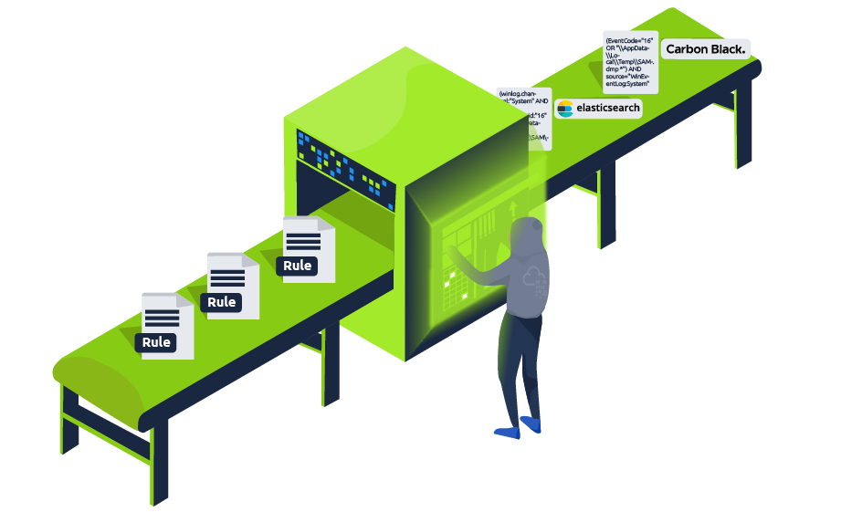
Why analysts love it
| Problem | Sigma's answer |
|---|---|
| Detections are trapped in one vendor's syntax | Write once, convert to any backend |
| Hard to share detection ideas across teams | A readable YAML file anyone can review |
| Threat-intel comes as IOCs only | Share behavioural rules alongside IOCs / YARA |
| Community detections for new threats | Thousands of public rules in the SigmaHQ repo |
When a new threat drops, the community often publishes a Sigma rule within hours. You pull it, convert it to your SIEM, test it, and you have coverage the same day — no waiting on a vendor.
Module 3 · 3.5 — detection engineering, shareable rule formats
Sigma Rule Syntax
A handful of fields. Read one and you can read them all.
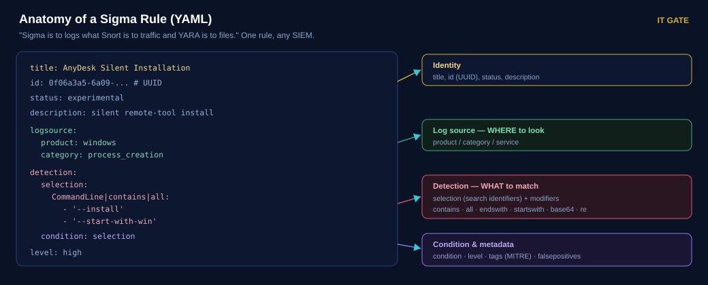
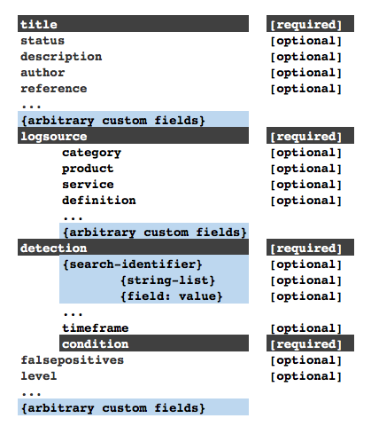
| Field | What it says |
|---|---|
title | short, clear name of what it detects |
id | globally-unique UUID |
status | maturity: stable / test / experimental / deprecated / unsupported |
description | what the rule catches and why |
logsource | where to look: product, category, service |
detection | what to match: search identifiers + condition |
level | informational → low → medium → high → critical |
tags | MITRE ATT&CK tactics/techniques, CVEs |
falsepositives | known benign triggers to expect |
Case-sensitive · spaces (never tabs) for indentation · # for comments · key: value
pairs · - for list items · .yml extension. One indentation mistake breaks the rule.
Sigma — Selection, Modifiers, Condition
The detection block answers one question: which log lines are suspicious?
You write the answer in three easy pieces.
You tell security: "catch anyone in a red jacket (selection) — but not our staff, who also wear red (filter). So: stop anyone in red who isn't staff (condition)." Sigma works exactly the same way.
Piece 1 — Selection: what to look for
Name a field and the value you want to match. This tiny selection catches PowerShell running:
selection:
Image|endswith: '\powershell.exe'Need more than one value? There are just two patterns:
| You want… | Write it as… | Means |
|---|---|---|
| ANY of these (OR) | a list — lines starting with - | match if one value is found |
| ALL of these (AND) | stacked Field: value lines | match only if every line is true |
# ANY of these command names (OR)
selection:
Image|endswith:
- '\powershell.exe'
- '\cmd.exe'
# powershell AND a download word (both must be true)
selection:
Image|endswith: '\powershell.exe'
CommandLine|contains: 'DownloadString'Piece 2 — Modifiers: how to match
A modifier is added after the field with a |. It tells Sigma where in the field to look:
| Modifier | Matches when the value… | Example |
|---|---|---|
contains | appears anywhere | catch mimikatz inside a long command line |
endswith | is at the end | \cmd.exe (ignore the folder path) |
startswith | is at the start | C:\Users\ |
all | (on a list) every item is present | all install flags together |
Two more you'll meet later: base64 (match encoded text) and re (use a regex). You don't need them today.
Piece 3 — Condition: the decision
The condition just names which pieces must be true. Most rules are one of these two shapes:
condition: selection # simplest — alert on the selection
condition: selection and not filter # alert, but skip the known-good caseselection and not filter = "alert on the suspicious thing, unless it's the exception
I listed." That single pattern covers most Sigma rules you'll ever write.
Module 3 · 3.5 — detection logic, matching conditions, reducing false positives with exceptions
Write a Rule, Then Convert It
From threat intel to a running query in five steps.
The scenario: intel says attackers install a remote-access tool (AnyDesk) silently, using
command-line flags like --install and --start-with-win, then add a hidden admin.
You're asked to detect the install.
| Step | Do |
|---|---|
| 1 · Intel analysis | pull the strong indicators — the install flags, the drop path |
| 2 · Identify | fill title, description, status: experimental |
| 3 · Log source | category: process_creation, product: windows |
| 4 · Detection | CommandLine|contains|all the flags; add the current directory |
| 5 · Metadata | level: high, MITRE T1219 (remote access), false positives |
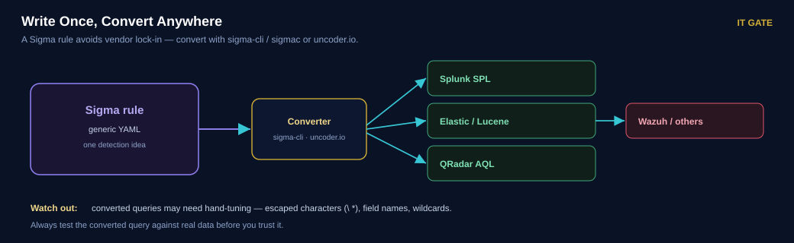
sigma-cli tool or the web tool uncoder.io.
Convert the finished rule to your SIEM. For example, converting to Splunk produces a search like:
(CommandLine="*--install*" CommandLine="*--start-with-win*"
CurrentDirectory="*C:\\ProgramData\\AnyDesk.exe*")Conversion tools stumble on escaped characters (\, *) and differing field names
between backends. Always paste the query into your SIEM and test it against real data — adjust wildcards and
escapes until it matches. A rule you didn't test is a rule you don't have.
Module 3 · 3.5 — detection-as-code, testing detections before deployment
Your Turn — Write One Simple Sigma Rule
Just fill in the blanks. We'll detect the whoami command — one of the first things an attacker runs after breaking in.
In-class Sigma VM (TryHackMe · Sigma) with the Kibana dashboard of test logs. You only need a text editor and the converter — nothing to install.
Copy the skeleton below, fill the three blanks (___), convert it, and run it. That's the whole lab.
Step 1 — copy this skeleton into your editor:
title: ___ # 1. name it, e.g. "Whoami Execution"
status: experimental
description: detects the whoami reconnaissance command
logsource:
category: process_creation
product: windows
detection:
selection:
Image|endswith: '___' # 2. which program? (hint: \whoami.exe)
condition: ___ # 3. what must be true? (hint: selection
level: low
tags:
- attack.discovery
- attack.t1033- Fill blank 1 — give the rule a clear
title. - Fill blank 2 — the program to catch:
\whoami.exe. - Fill blank 3 — the decision:
selection. - Convert it — paste the rule into uncoder.io, pick your SIEM (Splunk or Elastic), and copy the query it gives you.
- Run it — paste the query into the dashboard, widen the time range, and check you get hits.
Show the finished rule
title: Whoami Execution
status: experimental
description: detects the whoami reconnaissance command
logsource:
category: process_creation
product: windows
detection:
selection:
Image|endswith: '\whoami.exe'
condition: selection
level: low
tags:
- attack.discovery
- attack.t1033✅ You're done when
- Your YAML has no red errors (spaces for indentation, not tabs)
- uncoder.io gives you a query without complaining
- The query returns at least one
whoamievent in the dashboard
Add a second field to selection so it also needs a command line — for example
CommandLine|contains: '/all'. Notice how stacking two lines means both must match.
From Events to Alerts
Your rules just created alerts. Now learn to read one like an L1 analyst.
The properties every alert carries
| Property | Tells you |
|---|---|
| Time | when it fired (usually minutes after the real event) |
| Name | a summary from the rule (e.g. "Windows RDP Bruteforce") |
| Severity | urgency: low → medium → high → critical |
| Status | New · In Progress · Closed |
| Verdict | True Positive / False Positive (set by the analyst) |
| Assignee | who owns it — the analyst takes responsibility |
| Description | the rule's logic, why it's suspicious, how to triage |
| Fields | the values it fired on — hostname, command line, IP… |
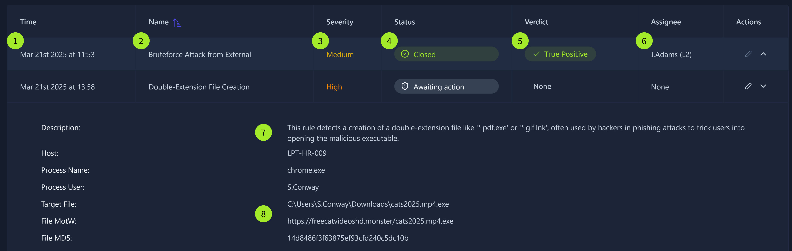
L1 reviews alerts and separates bad from good; L2 takes escalations for deeper analysis; SOC engineers make sure alerts carry enough context; the manager watches triage speed and quality. Today you play L1.
Module 3 · 3.7 — the alert lifecycle, alert fields, severity & status
Alert Triage — The L1 Loop
Prioritise the queue, take ownership, investigate, give a verdict — and always comment.
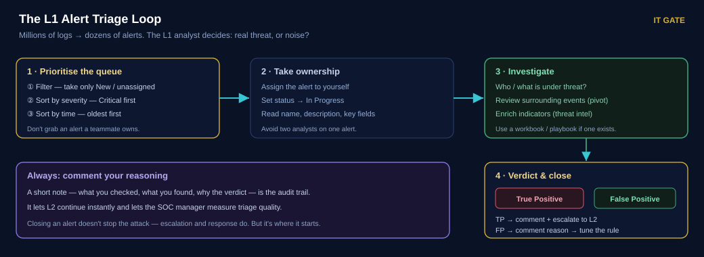
Prioritise — which alert first?
| Step | Rule of thumb |
|---|---|
| 1 · Filter | only take New / unassigned alerts — don't step on a teammate's work |
| 2 · Sort by severity | critical → high → medium → low (critical is likeliest to be real) |
| 3 · Sort by time | oldest first — the older breach is further along |
Then work it
- Take ownership — assign to yourself, set In Progress, read name + description + fields.
- Investigate — who/what is under threat? review surrounding events (pivot, Session 3), enrich the indicators (next pages).
- Verdict — True Positive → comment + escalate to L2; False Positive → comment why + tune the rule.
Many SOCs give L1 a workbook (playbook/runbook) per alert category — "for this alert, check these fields, look for these red flags, pivot here." When one exists, follow it; when it doesn't, use the Session 3 pivoting method.
Module 3 · 3.7 — triage workflow, prioritisation, escalation criteria
IP & Domain Threat Intel — Enrich the Indicator
Most alerts contain an IP or a domain. Enrichment turns it into a verdict.
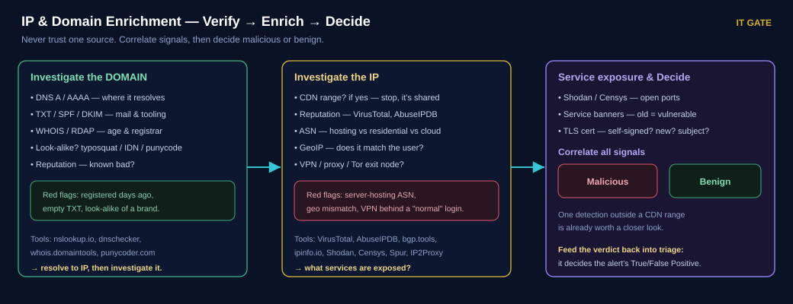
Enrich a domain
| Signal | Tool | Red flag |
|---|---|---|
| DNS A/AAAA & TXT | nslookup.io, dnschecker | empty TXT, resolves to odd infrastructure |
| WHOIS / RDAP age | whois.domaintools | registered days ago (malware domains are short-lived) |
| Look-alike (typosquat / IDN) | punycoder.com | brand look-alike; Punycode xn-- means non-ASCII |
| Reputation | VirusTotal | known-bad community verdicts |
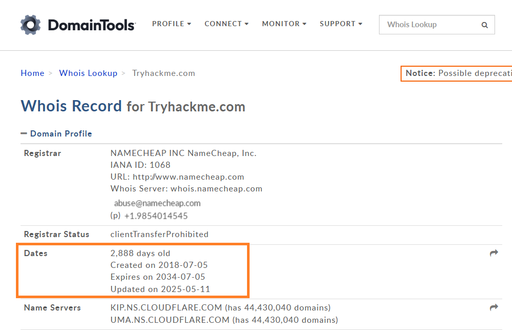
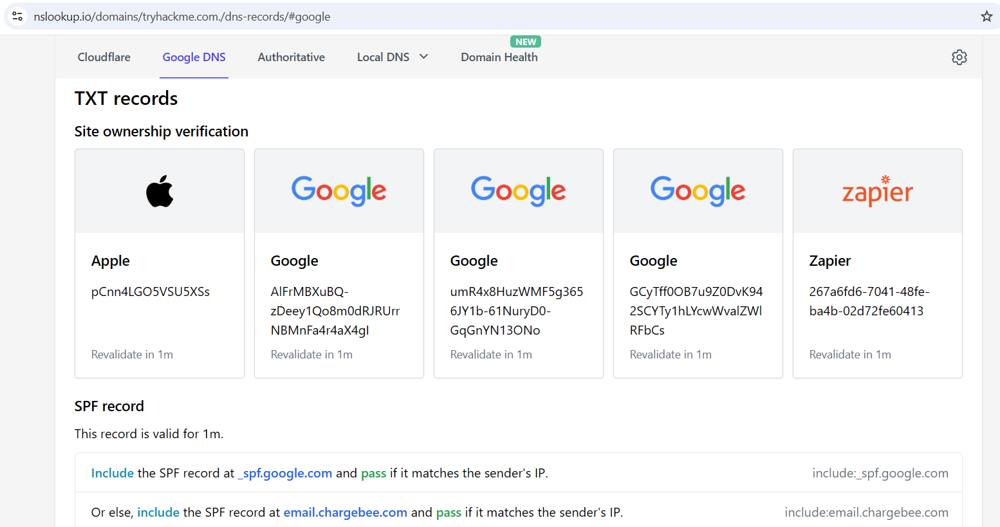
Enrich an IP
| Signal | Tool | What it tells you |
|---|---|---|
| Reputation / abuse history | VirusTotal, AbuseIPDB | scans, brute-force, past reports |
| ASN (who owns the network) | bgp.tools | hosting = risky, residential = VPN/compromised, cloud/CDN = needs care |
| Geolocation | ipinfo.io | does the country match the user/company? |
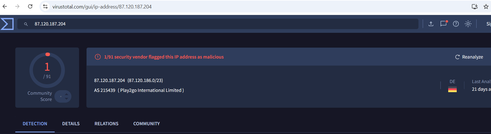
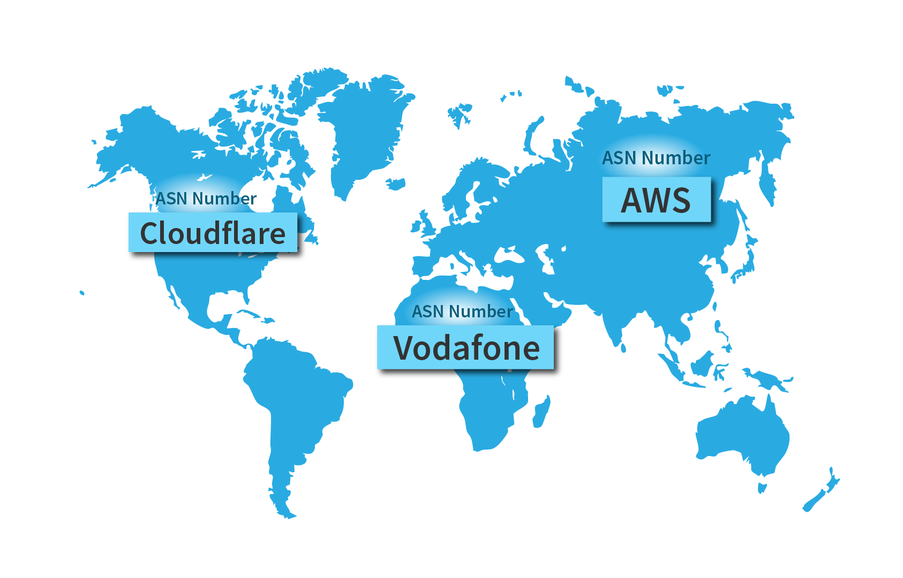
If an IP is in a CDN range (Cloudflare, Akamai, AWS), the IP itself tells you little — thousands of good and bad sites share it. Note it and move on; don't block a shared edge.
Module 3 · 3.8 — IOC types, indicator enrichment, WHOIS/DNS/reputation sources
Service Exposure, VPNs & the Verdict
Two more lenses, then decide — and feed the verdict back into triage.
What's exposed on the IP?
Open ports and service banners tell you how an attacker got in (victim IP) or that a host is a compromised jump point (attacker IP). Old service versions usually mean vulnerable ones.
| Tool | Shows |
|---|---|
| Shodan | indexed open ports, services, banners |
| Censys | services on non-standard ports; advanced search |
| crt.sh / SSL check | TLS certs — self-signed, brand-new, odd subject = investigate |
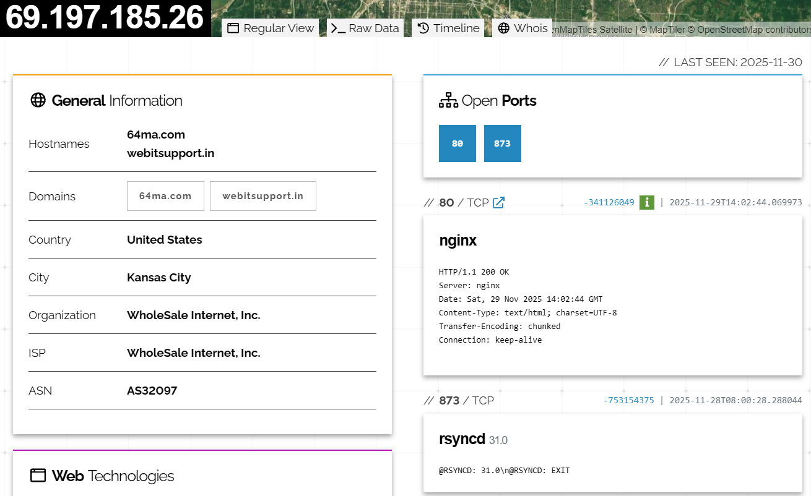
Is the user really the user? (VPN detection)
A login that looks normal — same country, same user-agent — can still be an attacker behind a VPN. Services like IP2Proxy and Spur label VPN, proxy and Tor-exit nodes. If the IP is a VPN node, you cannot trust its geolocation.
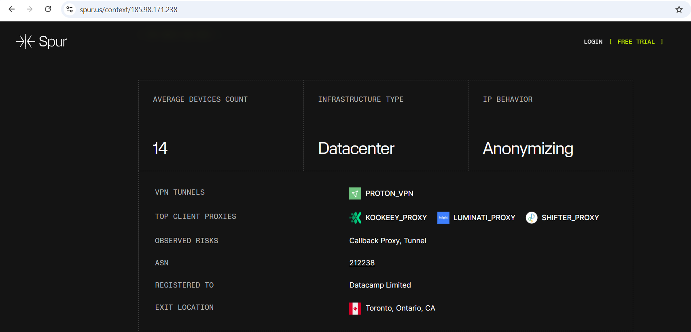
Correlate every signal — one detection outside a CDN range is already worth a closer look. Your malicious/ benign call becomes the alert's True/False Positive verdict back in triage. Enrichment isn't a side quest; it's how you close the alert honestly.
Module 3 · 3.8 — service exposure, anonymisation services, correlating indicators for a verdict
Put It Together — Rule → Alert → Triage → Verdict
The whole pipeline on one attack, start to finish.
Work this as a team, then race the second half in pairs:
- Detect. A remote-access tool is installed silently on a lab host. Confirm your Wazuh custom rule (or the Sigma rule you converted) fires on the install command line.
- Triage. The alert lands in the queue. Prioritise it (severity, time), take ownership, and read its fields — hostname, command line, and the external IP it called out to.
- Enrich. Take that IP and domain and run the workflow: reputation (VirusTotal/AbuseIPDB), ASN (bgp.tools), geo, and VPN check. Is the infrastructure malicious?
- Verdict. Write a short comment — what you checked, what you found, and your call. Set the verdict (True Positive) and escalate.
Instructors: use the connected-campaign dataset (Operation Telemetry) so the IP/domain enrichment has real indicators to pivot on. Solutions are hidden under each challenge on the challenges page.
Knowledge Check — Sigma, Triage & Intel
Q1 What is the main advantage of a Sigma rule over a native SIEM query?
- It runs faster than any SIEM
- It needs no log source
- It's vendor-neutral — convert to any backend
- It blocks the attacker automatically
Q2 In Sigma, what does the |all modifier on a list do?
- Matches if any one value is present
- Requires every listed value to match
- Base64-decodes the field
- Ignores the field
Q3 Two alerts are New. Which do you take first?
- The higher-severity one; if equal, the older one
- The newest one
- The one with the shortest name
- Any already assigned to a teammate
Q4 WHOIS shows a domain was registered 3 days ago. What does that suggest?
- It's definitely safe
- It must be a CDN
- Nothing — age is irrelevant
- A red flag — malicious domains are often brand new
Q5 An off-hours login looks normal, but the IP is a known VPN node. What's the risk?
- None — VPNs are always employees
- You can't trust the geolocation; it may be an attacker
- The alert is automatically a False Positive
- The SIEM will block it for you
Q6 An alert's external IP belongs to a bulletproof server-hosting ASN. How do you read that?
- Reassuring — hosting is always legitimate
- Irrelevant to triage
- Higher risk — hosting ASNs commonly run attacker infrastructure
- It means the IP is a CDN edge
Summary & Cheat Sheet
What we learned, in order
- Detection engineering — rule types, and TP / FP / TN / FN.
- Wazuh — decoders extract fields, rules test them, custom rules (≥100000,
if_sid) fine-tune. - Sigma — one YAML rule, converted to any SIEM; selection + filter + condition.
- Alert triage — prioritise, own, investigate, verdict, comment.
- Threat intel — enrich IP/domain (WHOIS, DNS, reputation, ASN, geo, exposure, VPN) → decide.
📋 Session 4 Cheat Sheet
Wazuh rule anatomy
id·level0–15if_group/if_sidparentfield name= decoded fieldmitre·description
Custom Wazuh rules
- File:
local_rules.xml - IDs: ≥ 100000
if_sid→ child of a parentlevel 0= mute (exception)- Restart
wazuh-manager
Ruleset Test phases
- P1 pre-decode (timestamp, host)
- P2 decode (extracted fields)
- P3 filter (which rule fired)
Sigma fields
title · id · statuslogsource(WHERE)detection + condition(WHAT)level · tags(MITRE)
Sigma logic
- List = OR · Map = AND
contains · startswith · endswith|all= every value ·|re= regexcondition: selection and not filter
Alert triage
- Filter → sort severity → sort time
- Assign → In Progress → investigate
- Verdict TP/FP → comment → escalate/tune
IP / domain intel
- Domain: DNS, TXT, WHOIS age, look-alike
- IP: VirusTotal, AbuseIPDB, ASN, geo
- Exposure: Shodan, Censys, crt.sh
- VPN: IP2Proxy, Spur
Verdicts
- TP = real threat → escalate
- FP = benign → tune rule
- FN = missed attack → write a rule
You can detect, triage and enrich. Session 5 steps up to the full incident response lifecycle and forensic readiness — what happens after an alert becomes a confirmed incident.
Key Takeaways
- Collection is not detection — someone has to write the rule.
- Wazuh: decoders extract fields, rules test them; custom rules use IDs ≥ 100000 and
if_sidparents. - Always confirm the parent rule fires (Ruleset Test Phase 3) before building a child.
- Sigma is write-once, convert-anywhere — but always test the converted query on real data.
- Triage order: filter new → severity → time; then own, investigate, verdict, and comment.
- Enrich every IP/domain: reputation, age, ASN, geo, exposure, VPN — correlate, don't trust one source.
- The enrichment verdict is the alert's True/False Positive call.
Homework
All free rooms — no subscription needed. Lock in detection engineering and threat intel before Session 5.
Finish the lab — a custom rule you wrote fires
RequiredDue · 18 AugYour custom Wazuh rule (ID ≥ 100000) must trigger in the Ruleset Test Phase 3, or your converted Sigma rule must return hits in your SIEM. This is the core skill of the session.
TryHackMe — Intro to Cyber Threat Intelligence (free)
RequiredDue · 18 AugThe foundations behind today's enrichment — IOCs, intel sources, and how a SOC uses them. Free room.
TryHackMe — Threat Intelligence Tools (free)
RequiredDue · 18 AugHands-on enrichment of IPs, domains and hashes with open-source tools — exactly the workflow from today. Free room.
TryHackMe — YARA (free)
OptionalDue · 25 AugDetection engineering for files — YARA is to files what Sigma is to logs. Great companion to today. Free room.
The in-class rooms (Custom Alert Rules in Wazuh, Sigma, SOC L1 Alert Triage, IP & Domain Threat Intel) are instructor-led. Progress is saved in this browser. "Add all deadlines" downloads an .ics for your calendar.
References
Primary source — INE eCIR v2
| Topic | INE module & lesson |
|---|---|
| Detection rules, alerts & rule types | Module 3 · 3.5 |
| Triage workflow · TP / FP / TN / FN · escalation | Module 3 · 3.7 |
| IOCs, indicator identification & enrichment | Module 3 · 3.8 |
In-class labs — TryHackMe (instructor-led)
Homework labs — TryHackMe (free)
- Intro to Cyber Threat Intelligence (free)
- Threat Intelligence Tools (free)
- YARA (free)
Tools referenced
- Detection: Wazuh Ruleset Test · SigmaHQ · sigma-cli · uncoder.io
- Enrichment: VirusTotal · AbuseIPDB · bgp.tools · ipinfo.io · Shodan · Censys · crt.sh · IP2Proxy · Spur
INE is the primary reference for the exam. THM reinforces — where wording differs, INE wins. Wazuh and Sigma rule syntax credit: the open-source Wazuh and SigmaHQ projects.
Create a homework task
Add your own lab, reading or exercise to this session's homework list.
Navigate with ← → arrow keys